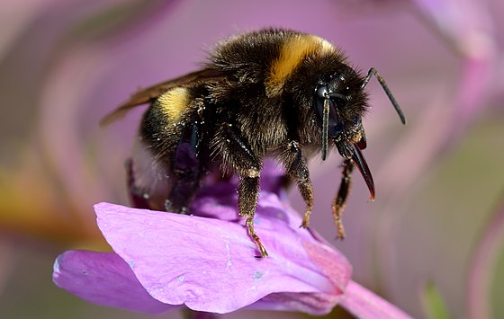

1. Описание и названия
 Описание: Иван-ча́й узколи́стный, Иван-чай, Кипре́й узколистный, или Копорский чай, или Хаменереум узколистный (лат. Chamaenérion angustifolium, или Epilóbium angustifolium) — многолетнее травянистое растение семейства Кипрейные (Onagraceae). Типовой вид рода Иван-чай (Chamaenerion), во многих классификациях включаемого в состав широко принимаемого рода Кипрей (Epilobium).
Описание: Иван-ча́й узколи́стный, Иван-чай, Кипре́й узколистный, или Копорский чай, или Хаменереум узколистный (лат. Chamaenérion angustifolium, или Epilóbium angustifolium) — многолетнее травянистое растение семейства Кипрейные (Onagraceae). Типовой вид рода Иван-чай (Chamaenerion), во многих классификациях включаемого в состав широко принимаемого рода Кипрей (Epilobium).
Названия: Иван-чаем было названо растение Epilobium angustifolium, из которого в России делали напиток, который сравнивали с китайским чаем (см. копорский чай).
«Верба-трава», «ива-трава» — это название возникло из-за схожести листьев с листьями ивы. «Огненная трава», «пожарник» — такое имя дано растению, потому что оно первым заселяет пожарища. «Скрипун и плакун» — при попытке выдернуть траву из земли возникает соответствующий звук. Также называют «дикая конопля» или «дикий лён» за высокие лубяные свойства его стеблей, дающих 15%-й выход волокна. Из этого волокна на Руси вили верёвки и изготавливали ткани. У иван-чая узколистного также есть названия «хлебница» или «мельничник». Высушенные и размолотые корни растения добавлялись в муку и использовались для выпечки хлеба. Добавка эта, помимо содержания витаминов и микроэлементов, экономила или замещала сахар. Помимо хлеба, народные умельцы изготовляли из корней спиртной напиток. Весьма распространённым названием являлся «пуховик». Пух, весьма обильный при цветении, использовался при изготовлении ваты, им набивали подушки и матрасы.
Другие народные названия:
Богородицына трава, Верба трава, Сорочьи глаза, Дятельник, Елушник, Дрема, Дремуха, Боровое зелье, Ива трава, Ивовая трава, Иванов-чай, Иван-чай, Чай-Иван, Иванъ-трава, Ивановская трава, Кипрей, Кипрейник, Кипер, Купрей, Копыл трава, Копорка, Копорский чай. Курильский чай, Дикая конопля, Красный цвет, Краснушка, Коневник, Любиш, Полевая левкония, Дикий лён, Льонок, Маточник, Мельничник, Плакун, Пуховник, Пущник, Пустодом, Рак, Ревенка, Синовод, Скрипун, Скрыпун, Скрыпень, Скрыпник, Скрипен, Лесной Скрыпий, Скрыпей, Скрипица, Скрипт, Скрипен, Скрипел, Хрыпняк, Хрепяльник, Хрипняк, Спрыг, Смолка, Степник, Дикая Фиалка, Хлебница, Хмызок, Шелковица, Щелкунец, Яровник или Еровник, Балник, Бурьян, Полевые васильки, Виноход, Ненадычка, Шалфей полевой, Ницалоза, Петушковы яблоки, Донник, Сапожник, Пырей.
В современном китайском языке иван-чай имеет очень образное название: «лю лань» (кит. упр. 柳兰, пиньинь liǔlán), что в буквальном переводе означает «ивовая орхидея».
2. Ботаническое описание
 Многолетнее травянистое растение высотой 50—150 (до 200) см.
Корневище толстое, ползучее; на вертикальных и горизонтальных корнях развиваются многочисленные дополнительные почки, которые способствуют быстрому вегетативному размножению.
Стебель прямостоячий, округлый, простой, голый, густо облиственный.
Листья очерёдные, сидячие, иногда с очень короткими черешками, простые, линейно-ланцетные, заострённые, к основанию клиновидно суженные, иногда почти округлые, 4—12 см длиной, 0,7—2 см шириной, по краю мелко железисто-зубчатые или цельные, сверху темно-зелёные, блестящие, снизу сизо-зелёные, пурпурно-красные, иногда бледно-розовые.
Цветки с двойным околоцветником, четырёхчленные, обоеполые, диаметром 2,5—3 см, собраны в редкую верхушечную кисть длиной 10—45 см, бледно-розовые, реже белые. Нектарное кольцо расположено вокруг столбика. Цветёт с начала второй половины лета в течение 30—35 дней.
Пыльцевые зёрна трёхпоровые, шаровидной формы. Диаметр 4,8—8,4 мкм. В очертании с полюса округло-треугольные, с ярко выраженными порами, с экватора — округлые. Поры округлые, внутриободковые, 17—20 мкм в диаметре. Мембрана пор бугорчатая. Ширина мезопориума 61,2—68,8 мкм. Экзина в центре мезопорума имеет толщину 1,6—1,8 мкм, около пор утолщена до 7 мкм. Скульптура тонкая, сглаженно-бугорчатая. Цвет пыльцы жёлто-зелёный.
Плод — пушистая, немного изогнутая коробочка, напоминающая стручок. Семена голые, продолговатые, наверху с длинными, тонкими, белыми волосками. Легко разлетаются на большие расстояния. Масса 1000 семян 0,10—0,12 грамм. Плоды созревают в августе—сентябре.
Многолетнее травянистое растение высотой 50—150 (до 200) см.
Корневище толстое, ползучее; на вертикальных и горизонтальных корнях развиваются многочисленные дополнительные почки, которые способствуют быстрому вегетативному размножению.
Стебель прямостоячий, округлый, простой, голый, густо облиственный.
Листья очерёдные, сидячие, иногда с очень короткими черешками, простые, линейно-ланцетные, заострённые, к основанию клиновидно суженные, иногда почти округлые, 4—12 см длиной, 0,7—2 см шириной, по краю мелко железисто-зубчатые или цельные, сверху темно-зелёные, блестящие, снизу сизо-зелёные, пурпурно-красные, иногда бледно-розовые.
Цветки с двойным околоцветником, четырёхчленные, обоеполые, диаметром 2,5—3 см, собраны в редкую верхушечную кисть длиной 10—45 см, бледно-розовые, реже белые. Нектарное кольцо расположено вокруг столбика. Цветёт с начала второй половины лета в течение 30—35 дней.
Пыльцевые зёрна трёхпоровые, шаровидной формы. Диаметр 4,8—8,4 мкм. В очертании с полюса округло-треугольные, с ярко выраженными порами, с экватора — округлые. Поры округлые, внутриободковые, 17—20 мкм в диаметре. Мембрана пор бугорчатая. Ширина мезопориума 61,2—68,8 мкм. Экзина в центре мезопорума имеет толщину 1,6—1,8 мкм, около пор утолщена до 7 мкм. Скульптура тонкая, сглаженно-бугорчатая. Цвет пыльцы жёлто-зелёный.
Плод — пушистая, немного изогнутая коробочка, напоминающая стручок. Семена голые, продолговатые, наверху с длинными, тонкими, белыми волосками. Легко разлетаются на большие расстояния. Масса 1000 семян 0,10—0,12 грамм. Плоды созревают в августе—сентябре.

3. Распространение
Произрастает по всему Северному полушарию. На территории России преимущественно в нечернозёмной полосе. Огромные площади занимает на Урале и Алтае. Растёт на хорошо освещёных местах: опушки смешанных и хвойных лесов, осушенные болота (торфяники), железнодорожные насыпи, берега карьеров, оврагов и лесных ручьёв. Характерен для мест лесных вырубок и гарей, где растёт до 10 лет, затем вытесняется малиной и таволгой.
4. Экология
Произрастает на почвах различного механического состава: от песков до тяжёлых суглинков. Мирится с различным содержанием влаги в почве, за исключением очень сухих и сырых почв. Отрицательно реагирует на близкое залегание грунтовых вод и длительное заливание полыми водами. Растёт на почвах с различной кислотностью — pH 4,0—7,0. Наиболее обильно разрастается на умеренно влажных супесчаных и суглинистых незадернелых почвах, которые богаты нитратами. Экспериментально доказано, что кипрей узколистный усваивает азот только в форме нитратов, и не усваивает азот в аммиачной форме. Поэтому именно на лесных гарях и вырубках создаются условия для его хорошего произрастания. Предпочитает открытые, не затенённые места. При этом достаточно теневынослив и произрастает в разреженных лесах, но в этих условиях угнетается и иногда не плодоносит. Достаточно зимостоек и морозоустойчив. Хорошо отзывается на внесение удобрений
5. Химический состав
В молодых листьях и корневищах иван-чая узколистного содержится от 10 до 20 % дубильных веществ. В листьях — до 15 % слизи. В нём также обнаружено большое количество растительных волокон (целлюлозы), лектины, витамин С (от 90 до 588 мг% (то есть на 100 г сырой травы) — по крайней мере в 5—6 раз больше, чем в лимонах), сахара, органические кислоты, пектин, флавоноиды и следы алкалоидов. Среди микроэлементов, обнаруженных в растении, следует упомянуть о довольно большой концентрации железа, меди и марганца. В 100 г зелёной массы иван-чая узколистного содержится 23 мг железа, 1,3 мг никеля, 16 мг марганца, 1,3 мг титана, 0,44 мг молибдена и 6 мг бора. До бутонизации в надземной части растения имеется до 20 % белка, соли фосфора, кальция, кобальта. Кроме того, обнаружены калий, кальций, литий и др. элементы. В корнях концентрация танина может достигать 20 мг% (в листьях его около 10 мг%). Кофеина в иван-чае узколистном не содержится.
6. Значение и применение

До начала XX века значительной популярностью в различных регионах Восточной Европы, у самых широких слоёв общества пользовался горячий напиток из Иван-чая узколистного — копорский чай (копорка, иван-чай, русский чай). Название «копорского» получил по названию местности Копорье в Петербургской губернии, которая стала центром производства «копорского чая» и его торгового распространения по всей России и Европе. Его получали, заваривая листья растения после их ферментации и сушки. Сейчас в Копорье базируется производство чая «Родной», специализирующегося на изготовлении классического иван-чая, а также иван-чая с различными травяными и фруктовыми добавками.
Основной медонос в таёжной зоне Сибири, способный давать до 600 кг кипрейного мёда и более с гектара, но с возрастом мёдопродуктивность растения быстро падает, а к концу жизни сходит на нет. Один цветок даёт до 15 мг нектара, а единичные (как правило, первые) до 26 мг. При прохладных ночах и теплых днях выделяется наибольшее количество нектара. Продуцирование нектара повышается по мере продвижения на север, и достигает максимума в Красноярском крае и Якутии. В нектаре преобладают глюкоза и фруктоза. Сахаристость нектара сильно зависит от погодных условий: при высокой температуре и средней относительной влажности воздуха (самые благоприятные условия) содержание сахара в нектаре составляет от 4 до 6 мг, при прохладной погоде и высокой влажности падает до 1,3—2,3 мг сахара с одного цветка. Мёд прозрачный с лёгким зеленоватым оттенком (за счёт ярко-зелёной пыльцы), со слабо выраженным вкусом и ароматом, немного пряный. Кристаллизуется вскоре после откачивания крупной белоснежной крупкой.
Молодые листья пригодны для салатов и супов. Из корней кипрея на Кавказе делали муку и выпекали хлеб; при сбраживании она давала спиртовой напиток. Молодые побеги, корни и листья в свежем виде пригодны для приготовления витаминных салатов, варёными их можно употреблять в пищу вместо спаржи или капусты.
Эскимосы и чукчи заготавливали листья отваривая, отжимая и замораживания для их хранения в мешках из шкур нерпы для зимнего питания.
Волокно получаемое из стеблей можно использовать для изготовления веревки и грубых тканей. Стебли пригодны для изготовления строительных и изоляционных плит. Летучки семян можно использовать для набивки матрасов. Попытка изготовления пряжи из летучек окончилась неудачей.
В декоративном садоводстве применяется в цветниках «новой волны»
7. Кормовое значение
 Как кормовое растение наибольшее значение имеет для северных оленей и ряда промысловых животных. В районах, где недостаточно лугов он приобретает существенное значение для сельскохозяйственных животных. В некоторых районах имеет существенное кормовое значение для овцеводства, которые удовлетворительно или хорошо поедают растения. Обычно лучше, чем крупный рогатый скот. КРС в большинстве случает поедает лишь молодые побеги или верхушки. При этом поедаемость зависит от наличия или присутствия на пастбище более ценных кормовых растений. Отмечено плохое поедание лошадьми. Рекомендуется как корм для свиней. В опытах по скармливанию кроликам показал, поедаемость на 73 %.
Как кормовое растение наибольшее значение имеет для северных оленей и ряда промысловых животных. В районах, где недостаточно лугов он приобретает существенное значение для сельскохозяйственных животных. В некоторых районах имеет существенное кормовое значение для овцеводства, которые удовлетворительно или хорошо поедают растения. Обычно лучше, чем крупный рогатый скот. КРС в большинстве случает поедает лишь молодые побеги или верхушки. При этом поедаемость зависит от наличия или присутствия на пастбище более ценных кормовых растений. Отмечено плохое поедание лошадьми. Рекомендуется как корм для свиней. В опытах по скармливанию кроликам показал, поедаемость на 73 %.
Основной корм для марала весной и в начале лета в местах где гари занимают большие площади. Удовлетворительно поедается пятнистыми оленями. Лоси охотно поедают верхушки побегов. В некоторых районах это его основной летний корм. В июле — августе хорошо поедается благородным оленем, изюбрем. В июне — июле поедается туром. В июле поедается серной, косулей, зайцем-беляком. В небольших количествах поедается утками.
Растение пригодно для силосования. Заготовку проводят в фазе бутонизации — начале цветения. Силос получается хорошего качества. Поедается скотом более охотно, чем вико-овсяный силос. Кормление силосом благоприятно сказывается на удое молочного скота. При сушке на сено листья легко обламываются и кормовая ценность сильно снижается. Сено поедается крупным рогатым скотом неохотно. Вредных последствий от кормления животных силосом или сеном не отмечено. Однако, есть указание на утомление животных и обильное мочеотделение при кормлении животных кипреем узколистным.
Силос содержит: 75 % воды, 4 % протеина, 1,7 % жира, 6,4 % клетчатки, 10,6 % БЭВ, 2,7 % золы. На 100 кг силоса приходится 16,7 кормовых единиц и 1,5 переваримого протеина. Переваримость питательных веществ силоса средняя. Надземная масса в сухом состоянии содержит: 10,4—14,0 % протеина, 18,2—20,2 % клетчатки, 2—3,2 % жира, 4,3—9,9 % золы.
8. Применение в народной медицине
В народной медицине растение применяется при гонорее, сифилисе, листья и цветущую надземную часть — как ранозаживляющее средство, при отите, ангине, язве желудка, при мигрени и как седативное. Отвар листьев травники назначали при золотухе, желудочных заболеваниях и как снотворное. Знахари использовали иван-чай при лечении эпилепсии, алкогольных психозов, малокровии, как мягчительное и потогонное при простуде, а также при лечении различного вида злокачественных опухолей
Действует успокаивающе на центральную нервную систему. По своим седативным свойствам он несколько уступает валериане лекарственной, но обладает другими свойствами, которых у валерианы нет. Иван-чай способен изменять условно-рефлекторную деятельность человека, и поэтому весьма эффективен при лечении неврозов. Наряду с этим отвары кипрея узколистного усиливают действие седативных, снотворных и наркотических лекарств, обладают противосудорожным эффектом. Механизм действия иван-чая сходен с таким сильнодействующим препаратом, как аминазин. У аминазина есть среди отрицательных свойств неприятная для пациента способность расслаблять скелетную мускулатуру, что делает передвижение больных, получающих аминазин, довольно трудной задачей. Препараты же иван-чая практически не обладают подобным эффектом. Иван-чай положительно действует на работу сердца, благодаря находящемуся в растительном сырье гиперозиду, который является стресс-протектором, умеренным седатиком, модулятором настроения, снижает агрессивность. Лист кипрея помогает врачу сделать больного более коммуникабельным, контактным, менее напряжённым. Фитопрепараты из кипрея узколистного оказывают благоприятное действие при бессоннице, головной боли.
Листья и цветки растения оказывают, помимо седативного, противовоспалительное, ранозаживляющее и обволакивающее слизистые оболочки действие. Считается, что эти свойства обусловлены наличием в растении большого количества танинов и слизи. Поэтому народные травники и современные фитотерапевты применяют иван-чай при лечении язвенной болезни и других болезней желудочно-кишечного тракта со склонностью к поносам. Препараты кипрея узколистного в виде настоя используются при лечении различного рода экзем, атопического дерматита, псориаза и других болезней кожи, особенно если они сопровождаются расстройствами желудочно-кишечного тракта и невротическими проявлениями.
9. Исследования
Настои и отвары листьев иван-чая обладают сильным противовоспалительным и обволакивающим свойствами, обусловленными танинами и слизью (полисахаридами). Он имеет самый высокий коэффициент противовоспалительного действия среди исследованных растений отечественной флоры. Благодаря этому иван-чай оказывает высокий лечебный эффект при воспалительных заболеваниях простаты и других внутренних органов мочеполовой сферы мужчин.
В начале 70-х годов XX века группой советских специалистов во Всероссийском онкологическом центре РАМН был получен препарат ханерол. Сырьём для его получения служили соцветия иван-чая, собранные в фазе массового цветения. Было обнаружено, что иван-чай обладает выраженной цитостатической и гемагглютинирующей активностью, что подтверждено экспериментальными исследованиями. Ханерол обладает противоопухолевым действием. По спектру своей активности он ближе к группе антиметаболитов, к которым, например, относится препарат 5-фторурацил.
В конце XX века в лаборатории предварительного апробирования противовирусных веществ Белорусского НИИ эпидемиологии и микробиологии изучили противовирусную активность индивидуальных образцов растений и сборов трав, произрастающих в Белоруссии. Установлена способность кипрея узколистного подавлять размножение вируса простого герпеса в тканевых культурах.
На базе Санкт-Петербургской химико-фармацевтической академии в 1997 году Е. Л. Тамм изучила влияние экстрактов листа и корневища кипрея узколистного, полученных экстракцией 70%-м этиловым спиртом, в дозе 50 мг/кг при внутрибрюшинном введении на различные стадии воспалительного процесса. Контрольной группе животных вводили физиологический раствор натрия хлорида. Было установлено, что растительные вытяжки из кипрея узколистного обладают противоаллергическими, противоотёчными свойствами на модели бутадионовой язвы желудка. Препараты достоверно уменьшали количество деструкций слизистой оболочки желудка крыс. Таким образом, исследованные экстракционные препараты оказывали выраженное угнетающее влияние на различные звенья процесса воспаления. Полученные данные могут быть использованы для разработки новых лекарственных препаратов из кипрея узколистного.
10. Противопоказания приема Иан-чая
При всем многообразии полезных свойств иван-чая не стоит забывать, что у него есть и противопоказания.
1. Важно помнить, что он оказывает легкое слабительное действие.
2. Лечебные отвары и настои из этого растения не рекомендуется детям до 6 лет.
3. Беременным, а также кормящим мамочкам перед регулярным употреблением следует посоветоваться с врачом.
4. Если употреблять напиток дольше месяца без перерывов, возможно нарушение пищеварения.
5. Всегда есть риск возникновения индивидуальной непереносимости.
6. Если у вас есть тромбофлебит, тромбозы или увеличена свертываемость крови, употреблять иван-чай нужно крайне осторожно.
7. Важно не злоупотреблять напитком и использовать при изготовлении только качественное сырье.
8. Не стоит пить его при одновременном употреблении седативных и жаропонижающих лекарств.
Ориентируйтесь на свои ощущения: если Вы чувствуете, что самочувствие ухудшилось или появились признаки аллергической реакции, обязательно прервите употребление напитка и обратитесь к врачу.
11. Сбор, ферментация, сушка, хранение и заваривание Иван-чая
Когда и как правильно собирать Иван-чай
Когда наступает теплое, солнечное, зеленое лето, так хочется продлить его как можно дольше. Мы знаем небольшой секрет: заготовьте натуральный иван-чай, который будет радовать Вас круглый год.
Для сбора лучше выбирать летний период: особенно июнь и август.
Придерживайтесь нескольких простых, но очень важных правил, чтобы успешно собрать иван-чай:
Обратить внимание стоит на траву, которая растет вдали от дорог. Тогда на нее не оседает опасная пыль.
На сборы отправиться лучше с утра, когда сошла роса. Идеальное время – период долгой сухой погоды.
Уделить внимание сортировке иван-чая: следите, чтобы вместе с хорошими листьями не попался непригодный желтый лист, поврежденный, зараженный, поеденный насекомыми лист, сами насекомые или другие загрязнения.
Теперь, зная эти секреты и найдя нужную полянку с ароматным иван-чаем, можно начинать сбор.
Собираем так: держим растение за верхнюю часть, где находятся цветы, а второй рукой снимаем листья движением вниз. Делать это нужно только с верхней серединой ствола, так как нижние листочки необходимы для питания влагой и дальнейшего роста кипрея.
Цветки иван-чая тоже пригодны к сбору, но собирать их нужно в отдельный мешочек и засушивать отдельно от листков.
Как засушить Иван-чай
Технология заготовки иван-чая включает важнейший этап: сушка листьев.
Высушить иван-чай надо так, чтобы отправленный на выдержку, а потом на хранение, он не заплесневел. В итоге должен получиться очень сухой чай, чтобы при смятии листья могли немного крошиться.
Для качественной сушки можно выбрать два варианта: на солнце и в духовом шкафу.
1.На солнце
Выкладываем листья иван-чая на ровную поверхность и выставляем чай под прямые солнечные лучи. Затем убираем заготовку под навес и оставляем досушиваться. Общее время для этого способа – 24 часа.
2. В духовом шкафу
Выкладываем листья иван-чая на противень, застеленный пергаментной бумагой, ровным слоем. При температуре около 100 градусов листьям достаточно сушиться 60 минут.
Сушка цветов
Цветы после сбора не подвергают подвяливанию. Разложите их сразу тонким слоем на противне и сушите в духовке при температуре в +30 градусов. Можно не пользоваться духовкой, а высушить цветы в тени. Когда цветочки приобретут фиолетовый цвет, разложите их в емкости для хранения.
Сушка – это последний этап заготовки кипрея перед упаковкой. Если все этапы были проделаны качественно, получится ароматный чай, который станет украшением любого чаепития.
Правильная ферментация Иван-чая
Один из самых интересных и важных этапов заготовки иван-чая: ферментация.
Можно ли обойтись без этого загадочного процесса?
Ферментация – это окисление чайного листа. Сок чайных листьев вступает в реакцию с кислородом, и под действием микроорганизмов, которыми насыщены листья, начинается брожение. После нее лист иван-чая обретет свойства, присущие классическим чаям: появится выраженный цвет настоя, вкус и запах.
Пропускать этот этап нельзя, без него невозможно получить качественный иван-чай, который будет долго храниться и радовать насыщенным вкусом.
После скручивания вручную или с помощью мясорубки, складывайте листики в глубокую емкость. Для этого подойдет стеклянная, керамическая или эмалированная посуда. Если вы перекручивали их мясорубкой, дополнительно надавите на них руками, чтобы немного утрамбовать, а если вручную — накройте крышкой и положите сверху тяжелым предметом, дабы создать давление на некоторое время. Накройте тканью, поместите в темное место и оставьте бродить.
От времени брожения чая зависит его вкус и аромат:
1. Легкая степень — 3-6 часов. Начинает проявляться фруктово-цветочный запах. Вкус чая — мягкий, аромат сильный, но нежный.
2. Средняя степень — 10-16 часов. Чай обладает легкой кислинкой, терпкий, аромат ярко выраженный.
3. Глубокая степень — 20-36 часов. Терпкий с легким ароматом.
Как хранить заготовленный Иван-чай
Любой продукт нуждается в правильном и бережном хранении. Так и для иван-чая необходимы определенные условия, при которых он останется вкусным и ароматным.
Во-первых, подготовьте для домашнего иван-чая емкость с крышкой. В такой таре кипрей не впитает в себя лишних запахов, долгое время сохранит свежий вид.
Во-вторых, лучше выбрать для чая темное место. Попадание прямых солнечных лучей разрушает микроэлементы листьев, лишая их полезных свойств.
В-третьих, проследите, чтобы на заготовленные листья не попадала влага. В таком случае, листья быстро заплесневеют, а такой продукт категорически нельзя использовать.
При соблюдении простых, но важных, условий, иван-чай может храниться 2 года.
Отметим, что хранить готовый иван-чай в морозильной камере не рекомендуется. Заморозке чайные листы можно подвергнуть только на этапе «подвяливания», который предшествует этапу ферментации. Этот процесс поможет заготовить иван-чай, но не хранить его для дальнейшего употребления.
Как правильно заваривать и пить
Чтобы получить полезный напиток, залейте две ложки сухих листьев (можно вперемежку с цветами) одними или двумя стаканами кипятка, накройте крышкой и настаивайте от 10 до 15 минут. Пить чай лучше теплым. При остывании подогрейте его в микроволновке или на плите, но не кипятите.
Многих интересует, можно ли заваривать свежий иван-чай и как это правильно делать.
Из свежего кипрея делают отвары:
Залейте в кастрюле на высоту в 10 см свежие листья слоем в 3 см;
Нагрейте на слабом огне до закипания;
При закипании уберите с огня, накройте крышкой и настаивайте 10 минут.